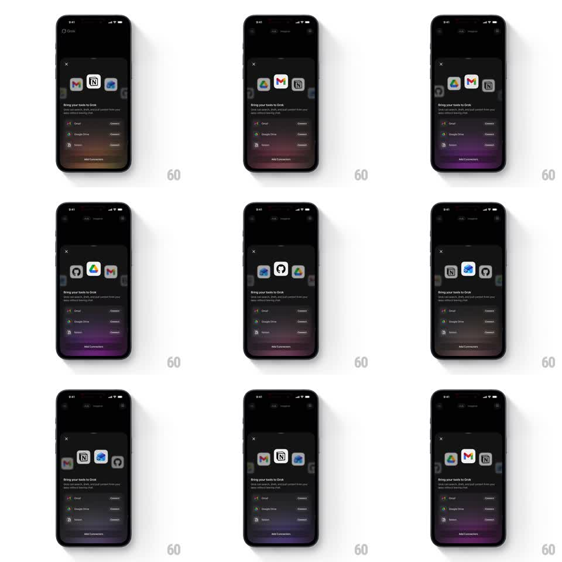

Media
Frame-by-frame

Rebuild this animation 1:1: Grok's connect-tools carousel - a 3D ring of app icons auto-spins on the onboarding sheet, keeping the front-facing icon large and sharp while icons recede smaller and dimmer toward the back.

Rebuild this animation 1:1: Grok's connect-tools carousel - a 3D ring of app icons auto-spins on the onboarding sheet, keeping the front-facing icon large and sharp while icons recede smaller and dimmer toward the back. ## Integration Integration: stack-agnostic spec - springs given as stiffness/damping, timed motions as duration + curve; map every value to your framework and animation library of choice. ## Scene Onboarding bottom sheet over a dimmed Grok chat: close X top-left, the icon carousel center-stage, "Bring your tools to Grok" headline with subcopy beneath, a list of tool rows (Gmail, Google Drive, Notion) each with a Connect button, and an "Add Connectors" button at the bottom. ## Motion spec Pattern: continuous 3D logo carousel with depth falloff. - Icons sit on a horizontal ring (about 6 visible slots) and orbit continuously (one full revolution ~6s, linear, no pause). - Depth mapping: front icon scale 1.0 at full opacity; side icons scale ~0.7 at ~60%; back icons scale ~0.5 at ~30% with slight blur. - Icons swap depth smoothly as they travel - no popping when one crosses the front slot. - The carousel runs behind static copy and rows; it never blocks or shifts the layout. ## Calibration - Perspective must read as a real ring viewed slightly from the front, not a flat marquee. - Front icon is always crisp - it's the moment of focus as each app passes. ## Reduced motion Carousel rotates slowly (revolution ~20s) or pauses entirely with icons arranged in a static arc. ## Don't miss - The spin never stops on its own; it is an ambient loop, not a timed intro. - Icons keep upright orientation while orbiting - only position and scale change.